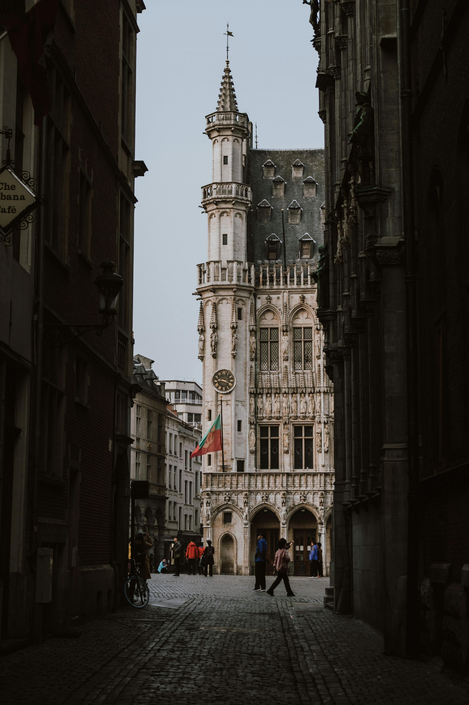
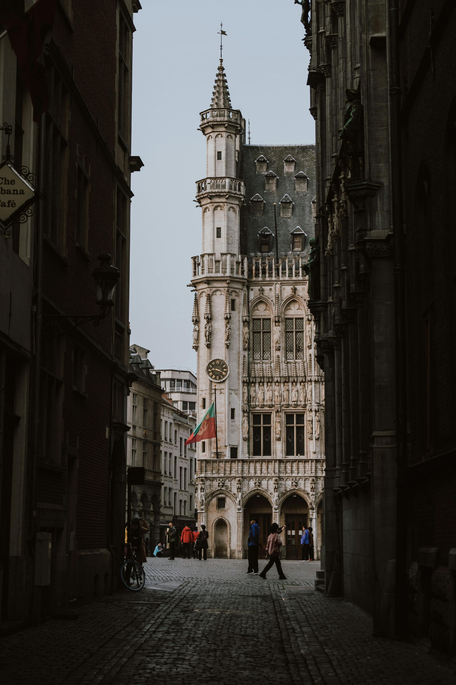
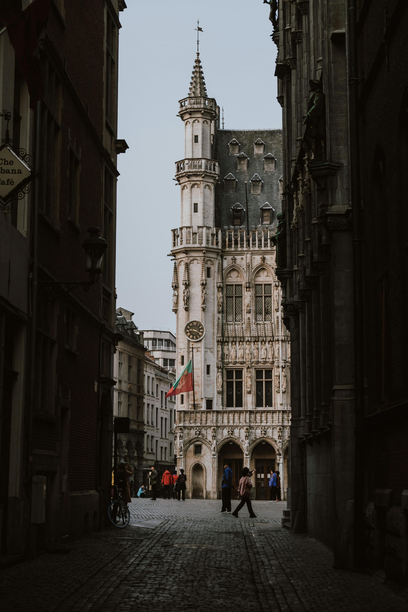

Galería de Bruselas
 


La capital de Bélgica y corazón de Europa
Bruselas, la capital de Bélgica y sede principal de la Unión Europea, es una ciudad fascinante que combina historia medieval con arquitectura moderna. Conocida por sus exquisitos chocolates, cervezas artesanales y los famosos waffles, Bruselas ofrece una experiencia cultural y gastronómica única.
Ubicada en el corazón de Europa, esta ciudad bilingüe (francés y neerlandés) alberga impresionantes monumentos como el Atomium y la Grand Place, considerada una de las plazas más bellas del mundo. No te pierdas al famoso Manneken Pis, símbolo del espíritu irreverente de la ciudad.

| Día | Horario | Actividad | Lugar |
|---|---|---|---|
| Día 1 | 09:00 - 12:00 | Tour por la Grand Place y alrededores | Centro histórico |
| Día 1 | 12:30 - 14:00 | Almuerzo típico belga | Restaurante local |
| Día 1 | 14:30 - 18:00 | Visita al Museo del Cómic y Manneken Pis | Barrio de la Ilustración |
| Día 2 | 09:30 - 12:00 | Visita al Atomium y Mini-Europa | Parque Heysel |
| Día 2 | 13:00 - 15:00 | Taller de chocolates belgas | Chocolatería artesanal |
| Día 2 | 16:00 - 18:00 | Paseo por el Barrio Europeo | Instituciones de la UE |
| Día 3 | 10:00 - 13:00 | Excursión a Brujas (opcional) | Ciudad de Brujas |
| Día 3 | 15:00 - 17:00 | Compras y tiempo libre | Galeries Royales Saint-Hubert |